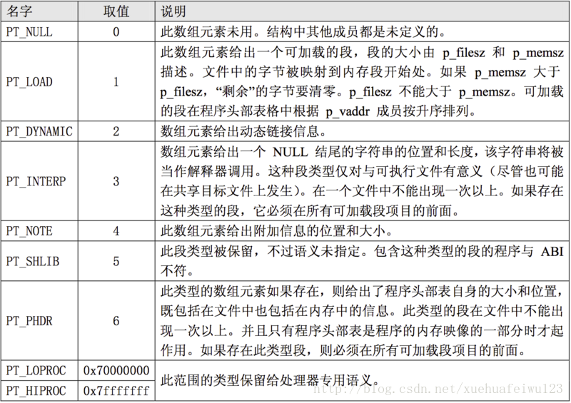

elf 文件详解
对象文件(Object files)分类
- 可重定位文件(Relocatable File)
这是由汇编器汇编生成的 .o 文件。后面的链接器(link editor)拿一个或一些 Relocatable object files 作为输入，经链接处理后，生成一个可执行的对象文件 (Executable file) 或者一个可被共享的对象文件(Shared object file)。我们可以使用 ar 工具将众多的 .o Relocatable object files 归档(archive)成 .a 静态库文件。如何产生 Relocatable file，你应该很熟悉了，请参见我们相关的基本概念文章和JulWiki。另外，可以预先告诉大家的是我们的内核可加载模块 .ko 文件也是 Relocatable object file。 - 可执行文件(Executable File)
包含适合于执行的一个程序，此文件规定了exec() 如何创建一个程序的进程映像。这我们见的多了。文本编辑器vi、调式用的工具gdb、播放mp3歌曲的软件mplayer等等都是Executable object file。你应该已经知道，在我们的 Linux 系统里面，存在两种可执行的东西。除了这里说的 Executable object file，另外一种就是可执行的脚本(如shell脚本)。注意这些脚本不是 Executable object file，它们只是文本文件，但是执行这些脚本所用的解释器就是 Executable object file，比如 bash shell 程序。 - 共享目标文件(Shared Object File) *.so
包含可在两种上下文中链接的代码和数据。动态库在发挥作用的过程中，必须经过两个步骤：- 链接编辑器(link editor)拿它和其他Relocatable object file以及其他shared object file作为输入，经链接处理后，生成另外的 shared object file 或者 executable file。
- 在运行时，动态链接器(dynamic linker)拿它和一个Executable file以及另外一些 Shared object file 来一起处理，在Linux系统里面创建一个进程映像。
- 我们可以使用 file 命令来查看一个文件属于上面三类中的哪一种
x@ubuntu:~/work/libs/libraries$ file output/build/app/glibc/tmem output/build/app/glibc/tmem: ELF 64-bit LSB shared object, x86-64, version 1 (SYSV), dynamically linked, interpreter /usr/local/glibc2.37/lib/ld-linux-x86-64.so.2, BuildID[sha1]=2d34a5877d15405a548f8e55b8f410748fde3084, for GNU/Linux 3.2.0, with debug_info, not stripped
格式说明
ELF头部
x@ubuntu:~/work/libs/libraries$ readelf -h output/build/app/glibc/tmem
ELF Header:
Magic: 7f 45 4c 46 02 01 01 00 00 00 00 00 00 00 00 00
Class: ELF64
Data: 2's complement, little endian
Version: 1 (current)
OS/ABI: UNIX - System V
ABI Version: 0
Type: DYN (Shared object file)
Machine: Advanced Micro Devices X86-64
Version: 0x1
Entry point address: 0x10a0
Start of program headers: 64 (bytes into file)
Start of section headers: 17904 (bytes into file)
Flags: 0x0
Size of this header: 64 (bytes)
Size of program headers: 56 (bytes)
Number of program headers: 13
Size of section headers: 64 (bytes)
Number of section headers: 37
Section header string table index: 36
/* ELF Header */
#define EI_NIDENT 16
typedef struct elfhdr {
unsigned char e_ident[EI_NIDENT]; /* ELF Identification */
Elf32_Half e_type; /* object file type */
Elf32_Half e_machine; /* machine */
Elf32_Word e_version; /* object file version */
Elf32_Addr e_entry; /* virtual entry point */
Elf32_Off e_phoff; /* program header table offset */
Elf32_Off e_shoff; /* section header table offset */
Elf32_Word e_flags; /* processor-specific flags */
Elf32_Half e_ehsize; /* ELF header size */
Elf32_Half e_phentsize; /* program header entry size */
Elf32_Half e_phnum; /* number of program header entries */
Elf32_Half e_shentsize; /* section header entry size */
Elf32_Half e_shnum; /* number of section header entries */
Elf32_Half e_shstrndx; /* section header table's "section
header string table" entry offset */
} Elf32_Ehdr;
typedef struct {
unsigned char e_ident[EI_NIDENT]; /* Id bytes */
Elf64_Quarter e_type; /* file type */
Elf64_Quarter e_machine; /* machine type */
Elf64_Half e_version; /* version number */
Elf64_Addr e_entry; /* entry point */
Elf64_Off e_phoff; /* Program hdr offset */
Elf64_Off e_shoff; /* Section hdr offset */
Elf64_Half e_flags; /* Processor flags */
Elf64_Quarter e_ehsize; /* sizeof ehdr */
Elf64_Quarter e_phentsize; /* Program header entry size */
Elf64_Quarter e_phnum; /* Number of program headers */
Elf64_Quarter e_shentsize; /* Section header entry size */
Elf64_Quarter e_shnum; /* Number of section headers */
Elf64_Quarter e_shstrndx; /* String table index */
} Elf64_Ehdr;
程序头部（Program Header）
x@ubuntu:~/work/libs/libraries$ readelf -l output/build/app/glibc/tmem
Elf file type is DYN (Shared object file)
Entry point 0x10a0
There are 13 program headers, starting at offset 64
Program Headers:
Type Offset VirtAddr PhysAddr
FileSiz MemSiz Flags Align
PHDR 0x0000000000000040 0x0000000000000040 0x0000000000000040
0x00000000000002d8 0x00000000000002d8 R 0x8
INTERP 0x0000000000000318 0x0000000000000318 0x0000000000000318
0x000000000000002e 0x000000000000002e R 0x1
[Requesting program interpreter: /usr/local/glibc2.37/lib/ld-linux-x86-64.so.2]
LOAD 0x0000000000000000 0x0000000000000000 0x0000000000000000
0x0000000000000818 0x0000000000000818 R 0x1000
LOAD 0x0000000000001000 0x0000000000001000 0x0000000000001000
0x00000000000002a5 0x00000000000002a5 R E 0x1000
LOAD 0x0000000000002000 0x0000000000002000 0x0000000000002000
0x00000000000001b0 0x00000000000001b0 R 0x1000
LOAD 0x0000000000002d98 0x0000000000003d98 0x0000000000003d98
0x0000000000000278 0x0000000000000280 RW 0x1000
DYNAMIC 0x0000000000002da8 0x0000000000003da8 0x0000000000003da8
0x0000000000000200 0x0000000000000200 RW 0x8
NOTE 0x0000000000000348 0x0000000000000348 0x0000000000000348
0x0000000000000020 0x0000000000000020 R 0x8
NOTE 0x0000000000000368 0x0000000000000368 0x0000000000000368
0x0000000000000044 0x0000000000000044 R 0x4
GNU_PROPERTY 0x0000000000000348 0x0000000000000348 0x0000000000000348
0x0000000000000020 0x0000000000000020 R 0x8
GNU_EH_FRAME 0x0000000000002038 0x0000000000002038 0x0000000000002038
0x000000000000004c 0x000000000000004c R 0x4
GNU_STACK 0x0000000000000000 0x0000000000000000 0x0000000000000000
0x0000000000000000 0x0000000000000000 RW 0x10
GNU_RELRO 0x0000000000002d98 0x0000000000003d98 0x0000000000003d98
0x0000000000000268 0x0000000000000268 R 0x1
Section to Segment mapping:
Segment Sections...
00
01 .interp
02 .interp .note.gnu.property .note.gnu.build-id .note.ABI-tag .gnu.hash .dynsym .dynstr .gnu.version .gnu.version_r .rela.dyn .rela.plt
03 .init .plt .plt.got .plt.sec .text .fini
04 .rodata .eh_frame_hdr .eh_frame
05 .init_array .fini_array .dynamic .got .data .bss
06 .dynamic
07 .note.gnu.property
08 .note.gnu.build-id .note.ABI-tag
09 .note.gnu.property
10 .eh_frame_hdr
11
12 .init_array .fini_array .dynamic .got
可执行文件或者共享目标文件的程序头部是一个结构数组，每个结构描述了一个段 或者系统准备程序执行所必需的其它信息。目标文件的“段”包含一个或者多个“节区”， 也就是“段内容(Segment Contents)”。程序头部仅对于可执行文件和共享目标文件 有意义。 可执行目标文件在 ELF 头部的 e_phentsize和e_phnum 成员中给出其自身程序头部 的大小。程序头部的数据结构:
/* Program Header */
typedef struct {
Elf32_Word p_type; /* segment type */
Elf32_Off p_offset; /* segment offset */
Elf32_Addr p_vaddr; /* virtual address of segment */
Elf32_Addr p_paddr; /* physical address - ignored? */
Elf32_Word p_filesz; /* number of bytes in file for seg. */
Elf32_Word p_memsz; /* number of bytes in mem. for seg. */
Elf32_Word p_flags; /* flags */
Elf32_Word p_align; /* memory alignment */
} Elf32_Phdr;
typedef struct {
Elf64_Half p_type; /* entry type */
Elf64_Half p_flags; /* flags */
Elf64_Off p_offset; /* offset */
Elf64_Addr p_vaddr; /* virtual address */
Elf64_Addr p_paddr; /* physical address */
Elf64_Xword p_filesz; /* file size */
Elf64_Xword p_memsz; /* memory size */
Elf64_Xword p_align; /* memory & file alignment */
} Elf64_Phdr;
其中各个字段说明：
- p_type 此数组元素描述的段的类型，或者如何解释此数组元素的信息。具体如下图。
 - p_offset 此成员给出从文件头到该段第一个字节的偏移。
- p_vaddr 此成员给出段的第一个字节将被放到内存中的虚拟地址。
- p_paddr 此成员仅用于与物理地址相关的系统中。因为 System V 忽略所有应用程序的物理地址信息，此字段对与可执行文件和共享目标文件而言具体内容是指定的。
- p_filesz 此成员给出段在文件映像中所占的字节数。可以为 0。
- p_memsz 此成员给出段在内存映像中占用的字节数。可以为 0。
- p_flags 此成员给出与段相关的标志。
- p_align 可加载的进程段的 p_vaddr 和 p_offset 取值必须合适，相对于对页面大小的取模而言。此成员给出段在文件中和内存中如何 对齐。数值 0 和 1 表示不需要对齐。否则 p_align 应该是个正整数，并且是 2 的幂次数，p_vaddr 和 p_offset 对 p_align 取模后应该相等。
节区（Sections）
x@ubuntu:~/work/libs/libraries$ readelf -S output/build/app/glibc/tmem
There are 37 section headers, starting at offset 0x45f0:
Section Headers:
[Nr] Name Type Address Offset
Size EntSize Flags Link Info Align
[ 0] NULL 0000000000000000 00000000
0000000000000000 0000000000000000 0 0 0
[ 1] .interp PROGBITS 0000000000000318 00000318
000000000000002e 0000000000000000 A 0 0 1
[ 2] .note.gnu.propert NOTE 0000000000000348 00000348
0000000000000020 0000000000000000 A 0 0 8
[ 3] .note.gnu.build-i NOTE 0000000000000368 00000368
0000000000000024 0000000000000000 A 0 0 4
[ 4] .note.ABI-tag NOTE 000000000000038c 0000038c
0000000000000020 0000000000000000 A 0 0 4
[ 5] .gnu.hash GNU_HASH 00000000000003b0 000003b0
0000000000000050 0000000000000000 A 6 0 8
[ 6] .dynsym DYNSYM 0000000000000400 00000400
00000000000001c8 0000000000000018 A 7 1 8
[ 7] .dynstr STRTAB 00000000000005c8 000005c8
00000000000000ff 0000000000000000 A 0 0 1
[ 8] .gnu.version VERSYM 00000000000006c8 000006c8
0000000000000026 0000000000000002 A 6 0 2
[ 9] .gnu.version_r VERNEED 00000000000006f0 000006f0
0000000000000020 0000000000000000 A 7 1 8
[10] .rela.dyn RELA 0000000000000710 00000710
00000000000000c0 0000000000000018 A 6 0 8
[11] .rela.plt RELA 00000000000007d0 000007d0
0000000000000048 0000000000000018 AI 6 24 8
[12] .init PROGBITS 0000000000001000 00001000
000000000000001b 0000000000000000 AX 0 0 4
[13] .plt PROGBITS 0000000000001020 00001020
0000000000000040 0000000000000010 AX 0 0 16
[14] .plt.got PROGBITS 0000000000001060 00001060
0000000000000010 0000000000000010 AX 0 0 16
[15] .plt.sec PROGBITS 0000000000001070 00001070
0000000000000030 0000000000000010 AX 0 0 16
[16] .text PROGBITS 00000000000010a0 000010a0
00000000000001f5 0000000000000000 AX 0 0 16
[17] .fini PROGBITS 0000000000001298 00001298
000000000000000d 0000000000000000 AX 0 0 4
[18] .rodata PROGBITS 0000000000002000 00002000
0000000000000037 0000000000000000 A 0 0 4
[19] .eh_frame_hdr PROGBITS 0000000000002038 00002038
000000000000004c 0000000000000000 A 0 0 4
[20] .eh_frame PROGBITS 0000000000002088 00002088
0000000000000128 0000000000000000 A 0 0 8
[21] .init_array INIT_ARRAY 0000000000003d98 00002d98
0000000000000008 0000000000000008 WA 0 0 8
[22] .fini_array FINI_ARRAY 0000000000003da0 00002da0
0000000000000008 0000000000000008 WA 0 0 8
[23] .dynamic DYNAMIC 0000000000003da8 00002da8
0000000000000200 0000000000000010 WA 7 0 8
[24] .got PROGBITS 0000000000003fa8 00002fa8
0000000000000058 0000000000000008 WA 0 0 8
[25] .data PROGBITS 0000000000004000 00003000
0000000000000010 0000000000000000 WA 0 0 8
[26] .bss NOBITS 0000000000004010 00003010
0000000000000008 0000000000000000 WA 0 0 1
[27] .comment PROGBITS 0000000000000000 00003010
000000000000002b 0000000000000001 MS 0 0 1
[28] .debug_aranges PROGBITS 0000000000000000 0000303b
0000000000000040 0000000000000000 0 0 1
[29] .debug_info PROGBITS 0000000000000000 0000307b
000000000000046e 0000000000000000 0 0 1
[30] .debug_abbrev PROGBITS 0000000000000000 000034e9
0000000000000136 0000000000000000 0 0 1
[31] .debug_line PROGBITS 0000000000000000 0000361f
0000000000000174 0000000000000000 0 0 1
[32] .debug_str PROGBITS 0000000000000000 00003793
00000000000003a3 0000000000000001 MS 0 0 1
[33] .debug_ranges PROGBITS 0000000000000000 00003b36
0000000000000030 0000000000000000 0 0 1
[34] .symtab SYMTAB 0000000000000000 00003b68
00000000000006f0 0000000000000018 35 56 8
[35] .strtab STRTAB 0000000000000000 00004258
000000000000022d 0000000000000000 0 0 1
[36] .shstrtab STRTAB 0000000000000000 00004485
0000000000000168 0000000000000000 0 0 1
Key to Flags:
W (write), A (alloc), X (execute), M (merge), S (strings), I (info),
L (link order), O (extra OS processing required), G (group), T (TLS),
C (compressed), x (unknown), o (OS specific), E (exclude),
l (large), p (processor specific)
节区中包含目标文件中的所有信息，除了:ELF 头部、程序头部表格、节区头部表格。节区满足以下条件:
- 目标文件中的每个节区都有对应的节区头部描述它，反过来，有节区头部不意 味着有节区。
- 每个节区占用文件中一个连续字节区域(这个区域可能长度为 0)。
- 文件中的节区不能重叠，不允许一个字节存在于两个节区中的情况发生。
- 目标文件中可能包含非活动空间(INACTIVE SPACE)。这些区域不属于任何头部和节区。
每个节区头部数据结构描述:
/* Section Header */
typedef struct {
Elf32_Word sh_name; /* name - index into section header
string table section */
Elf32_Word sh_type; /* type */
Elf32_Word sh_flags; /* flags */
Elf32_Addr sh_addr; /* address */
Elf32_Off sh_offset; /* file offset */
Elf32_Word sh_size; /* section size */
Elf32_Word sh_link; /* section header table index link */
Elf32_Word sh_info; /* extra information */
Elf32_Word sh_addralign; /* address alignment */
Elf32_Word sh_entsize; /* section entry size */
} Elf32_Shdr;
typedef struct {
Elf64_Half sh_name; /* section name */
Elf64_Half sh_type; /* section type */
Elf64_Xword sh_flags; /* section flags */
Elf64_Addr sh_addr; /* virtual address */
Elf64_Off sh_offset; /* file offset */
Elf64_Xword sh_size; /* section size */
Elf64_Half sh_link; /* link to another */
Elf64_Half sh_info; /* misc info */
Elf64_Xword sh_addralign; /* memory alignment */
Elf64_Xword sh_entsize; /* table entry size */
} Elf64_Shdr;
各个字段的解释:
sh_type 字段 节区类型定义：
sh_flags 字段定义了一个节区中包含的内容是否可以修改、是否可以执行等信息。 如果一个标志位被设置，则该位取值为 1。 定义的各位都设置为 0。
- SHF_WRITE: 节区包含进程执行过程中将可写的数据。
- SHF_ALLOC: 此节区在进程执行过程中占用内存。某些控制节区并不出现于目标文件的内存映像中，对于那些节区，此位应设置为 0。
- SHF_EXECINSTR: 节区包含可执行的机器指令。
- SHF_MASKPROC: 所有包含于此掩码中的四位都用于处理器专用的语义。
根据节区类型的不同，sh_link 和 sh_info 的具体含义也有所不同：
- 特殊节区
- 以 . 开头的节区名称是系统保留的。应用程序可以使用没有前缀的节区名称，以避 免与系统节区冲突。
- 目标文件格式允许人们定义不在上述列表中的节区。
- 保留给处理器体系结构的节区名称一般构成为 : 处理器体系结构名称简写 + 节区名称。
- 处理器名称应该与 e_machine 中使用的名称相同。例如 .FOO.psect 街区是由FOO 体系结构定义的 psect 节区。
查看 section 内容
我们可以使用 readelf -x SecNum 来打印出不同 section 中的内容。但是，无奈其输出结果都是机器码，对我们人来说不具备可读性。所以我们换用 binutils 包中的另外一个工具 objdump 来看看这些 sections 中到底具有哪些内容
源码如下：
#include <stdlib.h>
#include <stdio.h>
int gl = 5;
static void t() {
char* p2 = malloc(32);
snprintf(p2, 32, "hello, I am here 2");
}
int main(int argc, char **argv) {
char* p1 = malloc(32);
snprintf(p1, 32, "hello, I am here 1");
printf("111111111111\n");
t();
return 0;
}
.text
x@ubuntu:~/work/libs/libraries$ objdump -d -j .text output/build/app/glibc/tmem
output/build/app/glibc/tmem: file format elf64-x86-64
Disassembly of section .text:
00000000000010a0 <_start>:
10a0: f3 0f 1e fa endbr64
10a4: 31 ed xor %ebp,%ebp
10a6: 49 89 d1 mov %rdx,%r9
10a9: 5e pop %rsi
10aa: 48 89 e2 mov %rsp,%rdx
10ad: 48 83 e4 f0 and $0xfffffffffffffff0,%rsp
10b1: 50 push %rax
10b2: 54 push %rsp
10b3: 4c 8d 05 d6 01 00 00 lea 0x1d6(%rip),%r8 # 1290 <__libc_csu_fini>
10ba: 48 8d 0d 5f 01 00 00 lea 0x15f(%rip),%rcx # 1220 <__libc_csu_init>
10c1: 48 8d 3d fb 00 00 00 lea 0xfb(%rip),%rdi # 11c3 <main>
10c8: ff 15 12 2f 00 00 callq *0x2f12(%rip) # 3fe0 <__libc_start_main@GLIBC_2.2.5>
10ce: f4 hlt
10cf: 90 nop
00000000000010d0 <deregister_tm_clones>:
10d0: 48 8d 3d 39 2f 00 00 lea 0x2f39(%rip),%rdi # 4010 <completed.8061>
10d7: 48 8d 05 32 2f 00 00 lea 0x2f32(%rip),%rax # 4010 <completed.8061>
10de: 48 39 f8 cmp %rdi,%rax
10e1: 74 15 je 10f8 <deregister_tm_clones+0x28>
10e3: 48 8b 05 ee 2e 00 00 mov 0x2eee(%rip),%rax # 3fd8 <_ITM_deregisterTMCloneTable>
10ea: 48 85 c0 test %rax,%rax
10ed: 74 09 je 10f8 <deregister_tm_clones+0x28>
10ef: ff e0 jmpq *%rax
10f1: 0f 1f 80 00 00 00 00 nopl 0x0(%rax)
10f8: c3 retq
10f9: 0f 1f 80 00 00 00 00 nopl 0x0(%rax)
0000000000001100 <register_tm_clones>:
1100: 48 8d 3d 09 2f 00 00 lea 0x2f09(%rip),%rdi # 4010 <completed.8061>
1107: 48 8d 35 02 2f 00 00 lea 0x2f02(%rip),%rsi # 4010 <completed.8061>
110e: 48 29 fe sub %rdi,%rsi
1111: 48 89 f0 mov %rsi,%rax
1114: 48 c1 ee 3f shr $0x3f,%rsi
1118: 48 c1 f8 03 sar $0x3,%rax
111c: 48 01 c6 add %rax,%rsi
111f: 48 d1 fe sar %rsi
1122: 74 14 je 1138 <register_tm_clones+0x38>
1124: 48 8b 05 c5 2e 00 00 mov 0x2ec5(%rip),%rax # 3ff0 <_ITM_registerTMCloneTable>
112b: 48 85 c0 test %rax,%rax
112e: 74 08 je 1138 <register_tm_clones+0x38>
1130: ff e0 jmpq *%rax
1132: 66 0f 1f 44 00 00 nopw 0x0(%rax,%rax,1)
1138: c3 retq
1139: 0f 1f 80 00 00 00 00 nopl 0x0(%rax)
0000000000001140 <__do_global_dtors_aux>:
1140: f3 0f 1e fa endbr64
1144: 80 3d c5 2e 00 00 00 cmpb $0x0,0x2ec5(%rip) # 4010 <completed.8061>
114b: 75 2b jne 1178 <__do_global_dtors_aux+0x38>
114d: 55 push %rbp
114e: 48 83 3d a2 2e 00 00 cmpq $0x0,0x2ea2(%rip) # 3ff8 <__cxa_finalize@GLIBC_2.2.5>
1155: 00
1156: 48 89 e5 mov %rsp,%rbp
1159: 74 0c je 1167 <__do_global_dtors_aux+0x27>
115b: 48 8b 3d a6 2e 00 00 mov 0x2ea6(%rip),%rdi # 4008 <__dso_handle>
1162: e8 f9 fe ff ff callq 1060 <__cxa_finalize@plt>
1167: e8 64 ff ff ff callq 10d0 <deregister_tm_clones>
116c: c6 05 9d 2e 00 00 01 movb $0x1,0x2e9d(%rip) # 4010 <completed.8061>
1173: 5d pop %rbp
1174: c3 retq
1175: 0f 1f 00 nopl (%rax)
1178: c3 retq
1179: 0f 1f 80 00 00 00 00 nopl 0x0(%rax)
0000000000001180 <frame_dummy>:
1180: f3 0f 1e fa endbr64
1184: e9 77 ff ff ff jmpq 1100 <register_tm_clones>
0000000000001189 <t>:
1189: f3 0f 1e fa endbr64
118d: 55 push %rbp
118e: 48 89 e5 mov %rsp,%rbp
1191: 48 83 ec 10 sub $0x10,%rsp
1195: bf 20 00 00 00 mov $0x20,%edi
119a: e8 f1 fe ff ff callq 1090 <malloc@plt>
119f: 48 89 45 f8 mov %rax,-0x8(%rbp)
11a3: 48 8b 45 f8 mov -0x8(%rbp),%rax
11a7: 48 8d 15 56 0e 00 00 lea 0xe56(%rip),%rdx # 2004 <_IO_stdin_used+0x4>
11ae: be 20 00 00 00 mov $0x20,%esi
11b3: 48 89 c7 mov %rax,%rdi
11b6: b8 00 00 00 00 mov $0x0,%eax
11bb: e8 c0 fe ff ff callq 1080 <snprintf@plt>
11c0: 90 nop
11c1: c9 leaveq
11c2: c3 retq
00000000000011c3 <main>:
11c3: f3 0f 1e fa endbr64
11c7: 55 push %rbp
11c8: 48 89 e5 mov %rsp,%rbp
11cb: 48 83 ec 20 sub $0x20,%rsp
11cf: 89 7d ec mov %edi,-0x14(%rbp)
11d2: 48 89 75 e0 mov %rsi,-0x20(%rbp)
11d6: bf 20 00 00 00 mov $0x20,%edi
11db: e8 b0 fe ff ff callq 1090 <malloc@plt>
11e0: 48 89 45 f8 mov %rax,-0x8(%rbp)
11e4: 48 8b 45 f8 mov -0x8(%rbp),%rax
11e8: 48 8d 15 28 0e 00 00 lea 0xe28(%rip),%rdx # 2017 <_IO_stdin_used+0x17>
11ef: be 20 00 00 00 mov $0x20,%esi
11f4: 48 89 c7 mov %rax,%rdi
11f7: b8 00 00 00 00 mov $0x0,%eax
11fc: e8 7f fe ff ff callq 1080 <snprintf@plt>
1201: 48 8d 3d 22 0e 00 00 lea 0xe22(%rip),%rdi # 202a <_IO_stdin_used+0x2a>
1208: e8 63 fe ff ff callq 1070 <puts@plt>
120d: b8 00 00 00 00 mov $0x0,%eax
1212: e8 72 ff ff ff callq 1189 <t>
1217: b8 00 00 00 00 mov $0x0,%eax
121c: c9 leaveq
121d: c3 retq
121e: 66 90 xchg %ax,%ax
0000000000001220 <__libc_csu_init>:
1220: f3 0f 1e fa endbr64
1224: 41 57 push %r15
1226: 4c 8d 3d 6b 2b 00 00 lea 0x2b6b(%rip),%r15 # 3d98 <__frame_dummy_init_array_entry>
122d: 41 56 push %r14
122f: 49 89 d6 mov %rdx,%r14
1232: 41 55 push %r13
1234: 49 89 f5 mov %rsi,%r13
1237: 41 54 push %r12
1239: 41 89 fc mov %edi,%r12d
123c: 55 push %rbp
123d: 48 8d 2d 5c 2b 00 00 lea 0x2b5c(%rip),%rbp # 3da0 <__do_global_dtors_aux_fini_array_entry>
1244: 53 push %rbx
1245: 4c 29 fd sub %r15,%rbp
1248: 48 83 ec 08 sub $0x8,%rsp
124c: e8 af fd ff ff callq 1000 <_init>
1251: 48 c1 fd 03 sar $0x3,%rbp
1255: 74 1f je 1276 <__libc_csu_init+0x56>
1257: 31 db xor %ebx,%ebx
1259: 0f 1f 80 00 00 00 00 nopl 0x0(%rax)
1260: 4c 89 f2 mov %r14,%rdx
1263: 4c 89 ee mov %r13,%rsi
1266: 44 89 e7 mov %r12d,%edi
1269: 41 ff 14 df callq *(%r15,%rbx,8)
126d: 48 83 c3 01 add $0x1,%rbx
1271: 48 39 dd cmp %rbx,%rbp
1274: 75 ea jne 1260 <__libc_csu_init+0x40>
1276: 48 83 c4 08 add $0x8,%rsp
127a: 5b pop %rbx
127b: 5d pop %rbp
127c: 41 5c pop %r12
127e: 41 5d pop %r13
1280: 41 5e pop %r14
1282: 41 5f pop %r15
1284: c3 retq
1285: 66 66 2e 0f 1f 84 00 data16 nopw %cs:0x0(%rax,%rax,1)
128c: 00 00 00 00
0000000000001290 <__libc_csu_fini>:
1290: f3 0f 1e fa endbr64
1294: c3 retq
.data
x@ubuntu:~/work/libs/libraries$ objdump -d -j .data output/build/app/glibc/tmem
output/build/app/glibc/tmem: file format elf64-x86-64
Disassembly of section .data:
0000000000004000 <__data_start>:
...
0000000000004008 <__dso_handle>:
4008: 08 40 00 00 00 00 00 00 .@......
0000000000004010 <gl>:
4010: 05 00 00 00
.rodata
x@ubuntu:~/work/libs/libraries$ objdump -d -j .rodata output/build/app/glibc/tmem
output/build/app/glibc/tmem: file format elf64-x86-64
Disassembly of section .rodata:
0000000000002000 <_IO_stdin_used>:
2000: 01 00 02 00 68 65 6c 6c 6f 2c 20 49 20 61 6d 20 ....hello, I am
2010: 68 65 72 65 20 32 00 68 65 6c 6c 6f 2c 20 49 20 here 2.hello, I
2020: 61 6d 20 68 65 72 65 20 31 00 31 31 31 31 31 31 am here 1.111111
2030: 31 31 31 31 31 31 00 111111.
.strtab
x@ubuntu:~/work/libs/libraries$ readelf -x 35 output/build/app/glibc/tmem
Hex dump of section '.strtab':
0x00000000 00637274 73747566 662e6300 64657265 .crtstuff.c.dere
0x00000010 67697374 65725f74 6d5f636c 6f6e6573 gister_tm_clones
0x00000020 005f5f64 6f5f676c 6f62616c 5f64746f .__do_global_dto
0x00000030 72735f61 75780063 6f6d706c 65746564 rs_aux.completed
0x00000040 2e383036 31005f5f 646f5f67 6c6f6261 .8061.__do_globa
0x00000050 6c5f6474 6f72735f 6175785f 66696e69 l_dtors_aux_fini
0x00000060 5f617272 61795f65 6e747279 00667261 _array_entry.fra
0x00000070 6d655f64 756d6d79 005f5f66 72616d65 me_dummy.__frame
0x00000080 5f64756d 6d795f69 6e69745f 61727261 _dummy_init_arra
0x00000090 795f656e 74727900 745f6d65 6d2e6300 y_entry.t_mem.c.
0x000000a0 5f5f4652 414d455f 454e445f 5f005f5f __FRAME_END__.__
0x000000b0 696e6974 5f617272 61795f65 6e64005f init_array_end._
0x000000c0 5f64736f 5f68616e 646c6500 5f44594e _dso_handle._DYN
0x000000d0 414d4943 005f5f69 6e69745f 61727261 AMIC.__init_arra
0x000000e0 795f7374 61727400 5f5f474e 555f4548 y_start.__GNU_EH
0x000000f0 5f465241 4d455f48 4452005f 5f544d43 _FRAME_HDR.__TMC
0x00000100 5f454e44 5f5f005f 474c4f42 414c5f4f _END__._GLOBAL_O
0x00000110 46465345 545f5441 424c455f 005f5f6c FFSET_TABLE_.__l
0x00000120 6962635f 6373755f 66696e69 005f4954 ibc_csu_fini._IT
0x00000130 4d5f6465 72656769 73746572 544d436c M_deregisterTMCl
0x00000140 6f6e6554 61626c65 00707574 73404047 oneTable.puts@@G
0x00000150 4c494243 5f322e32 2e35005f 65646174 LIBC_2.2.5._edat
0x00000160 6100736e 7072696e 74664040 474c4942 a.snprintf@@GLIB
0x00000170 435f322e 322e3500 5f5f6c69 62635f73 C_2.2.5.__libc_s
0x00000180 74617274 5f6d6169 6e404047 4c494243 tart_main@@GLIBC
0x00000190 5f322e32 2e35005f 5f646174 615f7374 _2.2.5.__data_st
0x000001a0 61727400 5f5f676d 6f6e5f73 74617274 art.__gmon_start
0x000001b0 5f5f005f 494f5f73 7464696e 5f757365 __._IO_stdin_use
0x000001c0 64005f5f 6c696263 5f637375 5f696e69 d.__libc_csu_ini
0x000001d0 74006d61 6c6c6f63 4040474c 4942435f t.malloc@@GLIBC_
0x000001e0 322e322e 35005f5f 6273735f 73746172 2.2.5.__bss_star
0x000001f0 74006d61 696e0067 6c005f49 544d5f72 t.main.gl._ITM_r
0x00000200 65676973 74657254 4d436c6f 6e655461 egisterTMCloneTa
0x00000210 626c6500 5f5f6378 615f6669 6e616c69 ble.__cxa_finali
0x00000220 7a654040 474c4942 435f322e 322e3500 ze@@GLIBC_2.2.5.
strtab section 中存储着的都是以字符为分割符的字符串，这些字符串所表示的内容，通常是程序中定义的函数名称、所定义过的变量名称等等。。。当对象文件中其他地方需要和一个这样的字符串相关联的时候，往往会在对应的地方存储 .strtab section 中的索引值。比方下面将要介绍的符号表 .symtab section 中，有一个条目是用来描述符号 gv_inited 的，那么在该条目中就会有一个字段(st_name)记录着字符串 gv_inited 在 .strtab section 中的索引 7 。 .shstrtab 也是字符串表，只不过其中存储的是 section 的名字，而非所用函数或者变量的名称。
字符串表在真正链接和生成进程映像过程中是不需要使用的，但是其对我们调试程序来说就特别有帮助，因为我们人看起来最舒服的还是自然形式的字符串，而非像天书一样的数字符号。前面使用objdump来反汇编 .text section 的时候，之所以能看到定义了函数 sum_func ，那也是因为存在这个字符串表的原因。当然起关键作用的，还是符号表 .symtab section 在其中作为中介，下面我们就来看看符号表。
.symtab
x@ubuntu:~/work/libs/libraries$ readelf -s output/build/app/glibc/tmem
Symbol table '.dynsym' contains 20 entries:
Num: Value Size Type Bind Vis Ndx Name
0: 0000000000000000 0 NOTYPE LOCAL DEFAULT UND
1: 0000000000000000 0 NOTYPE WEAK DEFAULT UND _ITM_deregisterTMCloneTab
2: 0000000000000000 0 FUNC GLOBAL DEFAULT UND puts@GLIBC_2.2.5 (2)
3: 0000000000000000 0 FUNC GLOBAL DEFAULT UND snprintf@GLIBC_2.2.5 (2)
4: 0000000000000000 0 FUNC GLOBAL DEFAULT UND __libc_start_main@GLIBC_2.2.5 (2)
5: 0000000000000000 0 NOTYPE WEAK DEFAULT UND __gmon_start__
6: 0000000000000000 0 FUNC GLOBAL DEFAULT UND malloc@GLIBC_2.2.5 (2)
7: 0000000000000000 0 NOTYPE WEAK DEFAULT UND _ITM_registerTMCloneTable
8: 0000000000004014 0 NOTYPE GLOBAL DEFAULT 25 _edata
9: 0000000000004000 0 NOTYPE GLOBAL DEFAULT 25 __data_start
10: 0000000000004018 0 NOTYPE GLOBAL DEFAULT 26 _end
11: 0000000000004010 4 OBJECT GLOBAL DEFAULT 25 gl
12: 0000000000000000 0 FUNC WEAK DEFAULT UND __cxa_finalize@GLIBC_2.2.5 (2)
13: 0000000000004000 0 NOTYPE WEAK DEFAULT 25 data_start
14: 0000000000002000 4 OBJECT GLOBAL DEFAULT 18 _IO_stdin_used
15: 0000000000001220 101 FUNC GLOBAL DEFAULT 16 __libc_csu_init
16: 00000000000010a0 47 FUNC GLOBAL DEFAULT 16 _start
17: 0000000000004014 0 NOTYPE GLOBAL DEFAULT 26 __bss_start
18: 00000000000011c3 91 FUNC GLOBAL DEFAULT 16 main
19: 0000000000001290 5 FUNC GLOBAL DEFAULT 16 __libc_csu_fini
Symbol table '.symtab' contains 75 entries:
Num: Value Size Type Bind Vis Ndx Name
0: 0000000000000000 0 NOTYPE LOCAL DEFAULT UND
1: 0000000000000318 0 SECTION LOCAL DEFAULT 1
2: 0000000000000348 0 SECTION LOCAL DEFAULT 2
3: 0000000000000368 0 SECTION LOCAL DEFAULT 3
4: 000000000000038c 0 SECTION LOCAL DEFAULT 4
5: 00000000000003b0 0 SECTION LOCAL DEFAULT 5
6: 0000000000000410 0 SECTION LOCAL DEFAULT 6
7: 00000000000005f0 0 SECTION LOCAL DEFAULT 7
8: 00000000000006f2 0 SECTION LOCAL DEFAULT 8
9: 0000000000000720 0 SECTION LOCAL DEFAULT 9
10: 0000000000000740 0 SECTION LOCAL DEFAULT 10
11: 0000000000000800 0 SECTION LOCAL DEFAULT 11
12: 0000000000001000 0 SECTION LOCAL DEFAULT 12
13: 0000000000001020 0 SECTION LOCAL DEFAULT 13
14: 0000000000001060 0 SECTION LOCAL DEFAULT 14
15: 0000000000001070 0 SECTION LOCAL DEFAULT 15
16: 00000000000010a0 0 SECTION LOCAL DEFAULT 16
17: 0000000000001298 0 SECTION LOCAL DEFAULT 17
18: 0000000000002000 0 SECTION LOCAL DEFAULT 18
19: 0000000000002038 0 SECTION LOCAL DEFAULT 19
20: 0000000000002088 0 SECTION LOCAL DEFAULT 20
21: 0000000000003d98 0 SECTION LOCAL DEFAULT 21
22: 0000000000003da0 0 SECTION LOCAL DEFAULT 22
23: 0000000000003da8 0 SECTION LOCAL DEFAULT 23
24: 0000000000003fa8 0 SECTION LOCAL DEFAULT 24
25: 0000000000004000 0 SECTION LOCAL DEFAULT 25
26: 0000000000004014 0 SECTION LOCAL DEFAULT 26
27: 0000000000000000 0 SECTION LOCAL DEFAULT 27
28: 0000000000000000 0 SECTION LOCAL DEFAULT 28
29: 0000000000000000 0 SECTION LOCAL DEFAULT 29
30: 0000000000000000 0 SECTION LOCAL DEFAULT 30
31: 0000000000000000 0 SECTION LOCAL DEFAULT 31
32: 0000000000000000 0 SECTION LOCAL DEFAULT 32
33: 0000000000000000 0 SECTION LOCAL DEFAULT 33
34: 0000000000000000 0 FILE LOCAL DEFAULT ABS crtstuff.c
35: 00000000000010d0 0 FUNC LOCAL DEFAULT 16 deregister_tm_clones
36: 0000000000001100 0 FUNC LOCAL DEFAULT 16 register_tm_clones
37: 0000000000001140 0 FUNC LOCAL DEFAULT 16 __do_global_dtors_aux
38: 0000000000004014 1 OBJECT LOCAL DEFAULT 26 completed.8061
39: 0000000000003da0 0 OBJECT LOCAL DEFAULT 22 __do_global_dtors_aux_fin
40: 0000000000001180 0 FUNC LOCAL DEFAULT 16 frame_dummy
41: 0000000000003d98 0 OBJECT LOCAL DEFAULT 21 __frame_dummy_init_array_
42: 0000000000000000 0 FILE LOCAL DEFAULT ABS t_mem.c
43: 0000000000001189 58 FUNC LOCAL DEFAULT 16 t
44: 0000000000000000 0 FILE LOCAL DEFAULT ABS crtstuff.c
45: 00000000000021ac 0 OBJECT LOCAL DEFAULT 20 __FRAME_END__
46: 0000000000000000 0 FILE LOCAL DEFAULT ABS
47: 0000000000001298 0 FUNC LOCAL DEFAULT 17 _fini
48: 0000000000003da0 0 NOTYPE LOCAL DEFAULT 21 __init_array_end
49: 0000000000004008 0 OBJECT LOCAL DEFAULT 25 __dso_handle
50: 0000000000003da8 0 OBJECT LOCAL DEFAULT 23 _DYNAMIC
51: 0000000000003d98 0 NOTYPE LOCAL DEFAULT 21 __init_array_start
52: 0000000000002038 0 NOTYPE LOCAL DEFAULT 19 __GNU_EH_FRAME_HDR
53: 0000000000004018 0 OBJECT LOCAL DEFAULT 25 __TMC_END__
54: 0000000000003fa8 0 OBJECT LOCAL DEFAULT 24 _GLOBAL_OFFSET_TABLE_
55: 0000000000001000 0 FUNC LOCAL DEFAULT 12 _init
56: 0000000000001290 5 FUNC GLOBAL DEFAULT 16 __libc_csu_fini
57: 0000000000000000 0 NOTYPE WEAK DEFAULT UND _ITM_deregisterTMCloneTab
58: 0000000000004000 0 NOTYPE WEAK DEFAULT 25 data_start
59: 0000000000000000 0 FUNC GLOBAL DEFAULT UND puts@@GLIBC_2.2.5
60: 0000000000004014 0 NOTYPE GLOBAL DEFAULT 25 _edata
61: 0000000000000000 0 FUNC GLOBAL DEFAULT UND snprintf@@GLIBC_2.2.5
62: 0000000000000000 0 FUNC GLOBAL DEFAULT UND __libc_start_main@@GLIBC_
63: 0000000000004000 0 NOTYPE GLOBAL DEFAULT 25 __data_start
64: 0000000000000000 0 NOTYPE WEAK DEFAULT UND __gmon_start__
65: 0000000000002000 4 OBJECT GLOBAL DEFAULT 18 _IO_stdin_used
66: 0000000000001220 101 FUNC GLOBAL DEFAULT 16 __libc_csu_init
67: 0000000000000000 0 FUNC GLOBAL DEFAULT UND malloc@@GLIBC_2.2.5
68: 0000000000004018 0 NOTYPE GLOBAL DEFAULT 26 _end
69: 00000000000010a0 47 FUNC GLOBAL DEFAULT 16 _start
70: 0000000000004014 0 NOTYPE GLOBAL DEFAULT 26 __bss_start
71: 00000000000011c3 91 FUNC GLOBAL DEFAULT 16 main
72: 0000000000004010 4 OBJECT GLOBAL DEFAULT 25 gl
73: 0000000000000000 0 NOTYPE WEAK DEFAULT UND _ITM_registerTMCloneTable
74: 0000000000000000 0 FUNC WEAK DEFAULT UND __cxa_finalize@@GLIBC_2.2
- ELF 符号类型
- STT_OBJECT 表示和该符号对应的是一个数据对象
- STT_FUNC 表示该符号对应的是函数
- STT_SECTION 表示该符号和一个 section 相关，这种符号用于重定位。
- ELF 符号的绑定类型
- STB_LOCA 仅本对象文件可见
- STB_GLOBAL 全局可见
- STB_WEAK
- ELF 符号的值
- 在可重定位文件中，如果该符号对应的section index(上面的Ndx)为SHN_COMMON，那么符号的值表示的是该数据的对齐要求。
- 在可重定位文件中，除去上面那条定义的符号，对于其他的符号来说，其值表示的是对应 section 内的偏移值。
- 在可执行文件或者动态库中，符号的值表示的是运行时的内存地址。
重定位
假如在所产生的对象文件 test.o 中有对函数 sum_func 的引用，这对我们的x386结构来说，其实就是一条call指令。既然 sum_func 是定义在 sum.o 中的，那对 test.o 来说，它就是一个外部引用。所以，汇编器在产生 test.o 的时候，它会产生一个重定位条目。重定位条目中会包含以下几类东西：
- 它会包含一个符号表中一个条目的索引，因为这样我们才知道它具体是哪个符号需要被重定位的；
- 它会包含一个 .text section 中的地址单元的偏移值。原本这个偏移值处的地址单元里面应该存放着 call 指令的操作数。对上面来说，也就是函数 sum_func 的地址，但是目前这个地址汇编器还不知道。
- 它还会包含一个tag，以指明该重定位属于何种类型。
当我们用链接器去链接这个对象文件的时候，链接器会遍历所有的重定位条目，碰到像 sum_func 这样的外部引用，它会找到 sum_func 的确切地址，并且把它写回到上面 call 指令操作数所占用的那个地址单元。像这样的操作，称之为重定位操作。link editor 和 dynamic linker 都要完成一些重定位操作，只不过后者的动作更加复杂，因为它是在运行时动态完成的。概括一下，所谓重定位操作就是：“汇编的时候产生一个空坐位，上面用红纸写着要坐在这个座位上的人的名字，然后连接器在开会前安排那个人坐上去”。
如前面我们说过的，对象文件中的重定位条目，会构成一个个单独的 section。这些 section 的名字，常会是这样的形式：".rel.XXX"。其中XXX表示的是这些重定位条目所作用到的section，如 .text section。重定位条目所构成的section需要和另外两个section产生关联：符号表section(表示要重定位的是哪一个符号)以及受影响地址单元所在的section。下面使用工具来查看重定位section：
x@ubuntu:~/work/libs/libraries$ readelf -r output/build/app/glibc/tmem
Relocation section '.rela.dyn' at offset 0x740 contains 8 entries:
Offset Info Type Sym. Value Sym. Name + Addend
000000003d98 000000000008 R_X86_64_RELATIVE 1180
000000003da0 000000000008 R_X86_64_RELATIVE 1140
000000004008 000000000008 R_X86_64_RELATIVE 4008
000000003fd8 000100000006 R_X86_64_GLOB_DAT 0000000000000000 _ITM_deregisterTMClone + 0
000000003fe0 000400000006 R_X86_64_GLOB_DAT 0000000000000000 __libc_start_main@GLIBC_2.2.5 + 0
000000003fe8 000500000006 R_X86_64_GLOB_DAT 0000000000000000 __gmon_start__ + 0
000000003ff0 000700000006 R_X86_64_GLOB_DAT 0000000000000000 _ITM_registerTMCloneTa + 0
000000003ff8 000c00000006 R_X86_64_GLOB_DAT 0000000000000000 __cxa_finalize@GLIBC_2.2.5 + 0
Relocation section '.rela.plt' at offset 0x800 contains 3 entries:
Offset Info Type Sym. Value Sym. Name + Addend
000000003fc0 000200000007 R_X86_64_JUMP_SLO 0000000000000000 puts@GLIBC_2.2.5 + 0
000000003fc8 000300000007 R_X86_64_JUMP_SLO 0000000000000000 snprintf@GLIBC_2.2.5 + 0
000000003fd0 000600000007 R_X86_64_JUMP_SLO 0000000000000000 malloc@GLIBC_2.2.5 + 0
- r_offset 对于可重定位文件.o来说，就是地址单元的偏移值；对可执行文件或者动态库来说，就是该地址单元的运行时地址。
segments(段)
- 链接器在链接可执行文件或动态库的过程中，它会把来自不同可重定位对象文件中的相同名称的 section 合并起来构成同名的 section。接着，它又会把带有相同属性(比方都是只读并可加载的)的 section 都合并成所谓 segments(段)。segments 作为链接器的输出，常被称为输出section。我们开发者可以控制哪些不同.o文件的sections来最后合并构成不同名称的 segments。如何控制呢，就是通过 linker script 来指定。
- 一个单独的 segment 通常会包含几个不同的 sections，比方一个可被加载的、只读的segment 通常就会包括可执行代码section .text、只读的数据section .rodata以及给动态链接器使用的符号section .dymsym等等。section 是被链接器使用的，但是 segments 是被加载器所使用的。加载器会将所需要的 segment 加载到内存空间中运行。和用 sections header table 来指定一个可重定位文件中到底有哪些 sections 一样。在一个可执行文件或者动态库中，也需要有一种信息结构来指出包含有哪些 segments。这种信息结构就是 program header table。
x@ubuntu:~/work/libs/libraries$ readelf -l output/build/app/glibc/tmem
Elf file type is DYN (Shared object file)
Entry point 0x10a0
There are 13 program headers, starting at offset 64
Program Headers:
Type Offset VirtAddr PhysAddr
FileSiz MemSiz Flags Align
PHDR 0x0000000000000040 0x0000000000000040 0x0000000000000040
0x00000000000002d8 0x00000000000002d8 R 0x8
INTERP 0x0000000000000318 0x0000000000000318 0x0000000000000318
0x000000000000002e 0x000000000000002e R 0x1
[Requesting program interpreter: /usr/local/glibc2.37/lib/ld-linux-x86-64.so.2]
LOAD 0x0000000000000000 0x0000000000000000 0x0000000000000000
0x0000000000000848 0x0000000000000848 R 0x1000
LOAD 0x0000000000001000 0x0000000000001000 0x0000000000001000
0x00000000000002a5 0x00000000000002a5 R E 0x1000
LOAD 0x0000000000002000 0x0000000000002000 0x0000000000002000
0x00000000000001b0 0x00000000000001b0 R 0x1000
LOAD 0x0000000000002d98 0x0000000000003d98 0x0000000000003d98
0x000000000000027c 0x0000000000000280 RW 0x1000
DYNAMIC 0x0000000000002da8 0x0000000000003da8 0x0000000000003da8
0x0000000000000200 0x0000000000000200 RW 0x8
NOTE 0x0000000000000348 0x0000000000000348 0x0000000000000348
0x0000000000000020 0x0000000000000020 R 0x8
NOTE 0x0000000000000368 0x0000000000000368 0x0000000000000368
0x0000000000000044 0x0000000000000044 R 0x4
GNU_PROPERTY 0x0000000000000348 0x0000000000000348 0x0000000000000348
0x0000000000000020 0x0000000000000020 R 0x8
GNU_EH_FRAME 0x0000000000002038 0x0000000000002038 0x0000000000002038
0x000000000000004c 0x000000000000004c R 0x4
GNU_STACK 0x0000000000000000 0x0000000000000000 0x0000000000000000
0x0000000000000000 0x0000000000000000 RW 0x10
GNU_RELRO 0x0000000000002d98 0x0000000000003d98 0x0000000000003d98
0x0000000000000268 0x0000000000000268 R 0x1
Section to Segment mapping:
Segment Sections...
00
01 .interp
02 .interp .note.gnu.property .note.gnu.build-id .note.ABI-tag .gnu.hash .dynsym .dynstr .gnu.version .gnu.version_r .rela.dyn .rela.plt
03 .init .plt .plt.got .plt.sec .text .fini
04 .rodata .eh_frame_hdr .eh_frame
05 .init_array .fini_array .dynamic .got .data .bss
06 .dynamic
07 .note.gnu.property
08 .note.gnu.build-id .note.ABI-tag
09 .note.gnu.property
10 .eh_frame_hdr
11
12 .init_array .fini_array .dynamic .got
结果显示，在可执行文件 output/build/app/glibc/tmem 中，总共有13个 segments。同时，该结果也很明白显示出了哪些 section 映射到哪一个 segment 当中去。比方在索引为2的那个segment 中，总共有10个 sections 映射进来。注意segment 有三个标志: R 、W 和 E。这个表示该segment是可读，可写，也可执行的。
- 类型为PHDR的segment，用来包含程序头表本身。
- 类型为INTERP的segment只包含一个 section，那就是 .interp。在这个section中，包含了动态链接过程中所使用的解释器路径和名称。在Linux里面，这个解释器实际上就是 /lib/ ，这可以通过下面的 hexdump 看出来：
- Offset 表示当前段在二进制文件中的开始位置。
x@ubuntu:~/work/libs/libraries$ hexdump -s 0x318 -n 46 -C output/build/app/glibc/tmem
00000318 2f 75 73 72 2f 6c 6f 63 61 6c 2f 67 6c 69 62 63 |/usr/local/glibc|
00000328 32 2e 33 37 2f 6c 69 62 2f 6c 64 2d 6c 69 6e 75 |2.37/lib/ld-linu|
00000338 78 2d 78 38 36 2d 36 34 2e 73 6f 2e 32 00 |x-x86-64.so.2.|
00000346
- 为什么会有这样的一个 segment？这是因为我们写的应用程序通常都需要使用动态链接库.so。我们还是先大致说说程序在linux里面是怎么样运行起来的吧。当你在 shell 中敲入一个命令要执行时，内核会帮我们创建一个新的进程，它在往这个新进程的进程空间里面加载进可执行程序的代码段和数据段后，也会加载进动态连接器(在Linux里面通常就是 /lib/ld-linux.so 符号链接所指向的那个程序，它本省就是一个动态库)的代码段和数据。在这之后，内核将控制传递给动态链接库里面的代码。动态连接器接下来负责加载该命令应用程序所需要使用的各种动态库。加载完毕，动态连接器才将控制传递给应用程序的main函数。如此，你的应用程序才得以运行。
- 在应用程序中，会使用很多定义在动态库中的函数。最最基础的比方C函数库(其本身就是一个动态库)中定义的函数，每个应用程序总要使用到，就像我们test程序中使用到的 printf 函数。为了使得应用程序能够正确使用动态库，动态连接器在加载动态库后，它还会做更进一步的链接，这就是所谓的动态链接。为了让动态连接器能成功的完成动态链接过程，在前面运行的link editor需要在应用程序可执行文件中生成数个特殊的 sections，比方 .dynamic、.dynsym、.got和.plt等等。
- 接下来的数个 segments 中，最重要的是三个 segment：代码段，数据段和堆栈段。代码段和堆栈段的 VirtAddr 列的值分别为 0x0000000000001000 和 0x0000000000003d98。这是什么意思呢？这是说对应的段要加载在进程虚拟地址空间中的起始地址。虽然在可执行文件中规定了 text segment和 data segment 的起始地址，但是最终，在内存中的这些段的真正起始地址，却可能不是这样的，因为在动态链接器加载这些段的时候，需要考虑到页面对齐的因素。为什么？因为像x86这样的架构，它给内存单元分配读写权限的最小单位是页(page)而不是字节。也就是说，它能规定从某个页开始、连续多少页是只读的。却不能规定从某个页内的哪一个字节开始，连续多少个字节是只读的。因为x86架构中，一个page大小是4k，所以，动态链接器在加载 segment 到虚拟内存中的时候，其真实的起始地址的低12位都是零，也即以 0x1000 对齐。
- 真实的进程中的内存空间信息：
(gdb) i proc mappings
process 1041268
Mapped address spaces:
Start Addr End Addr Size Offset objfile
0x555555554000 0x555555555000 0x1000 0x0 /home/zhangkaiyuan/work/libs/libraries/output/build/app/glibc/tmem
0x555555555000 0x555555556000 0x1000 0x1000 /home/zhangkaiyuan/work/libs/libraries/output/build/app/glibc/tmem
0x555555556000 0x555555557000 0x1000 0x2000 /home/zhangkaiyuan/work/libs/libraries/output/build/app/glibc/tmem
0x555555557000 0x555555558000 0x1000 0x2000 /home/zhangkaiyuan/work/libs/libraries/output/build/app/glibc/tmem
0x555555558000 0x555555559000 0x1000 0x3000 /home/zhangkaiyuan/work/libs/libraries/output/build/app/glibc/tmem
0x555555559000 0x55555557a000 0x21000 0x0 [heap]
0x7ffff7df2000 0x7ffff7df4000 0x2000 0x0
0x7ffff7df4000 0x7ffff7e1c000 0x28000 0x0 /usr/local/glibc2.37/lib/libc.so.6
0x7ffff7e1c000 0x7ffff7f57000 0x13b000 0x28000 /usr/local/glibc2.37/lib/libc.so.6
0x7ffff7f57000 0x7ffff7fad000 0x56000 0x163000 /usr/local/glibc2.37/lib/libc.so.6
0x7ffff7fad000 0x7ffff7fae000 0x1000 0x1b9000 /usr/local/glibc2.37/lib/libc.so.6
0x7ffff7fae000 0x7ffff7fb2000 0x4000 0x1b9000 /usr/local/glibc2.37/lib/libc.so.6
0x7ffff7fb2000 0x7ffff7fb4000 0x2000 0x1bd000 /usr/local/glibc2.37/lib/libc.so.6
0x7ffff7fb4000 0x7ffff7fc3000 0xf000 0x0
0x7ffff7fc3000 0x7ffff7fc7000 0x4000 0x0 [vvar]
0x7ffff7fc7000 0x7ffff7fc9000 0x2000 0x0 [vdso]
0x7ffff7fc9000 0x7ffff7fca000 0x1000 0x0 /usr/local/glibc2.37/lib/ld-linux-x86-64.so.2
0x7ffff7fca000 0x7ffff7fef000 0x25000 0x1000 /usr/local/glibc2.37/lib/ld-linux-x86-64.so.2
0x7ffff7fef000 0x7ffff7ffa000 0xb000 0x26000 /usr/local/glibc2.37/lib/ld-linux-x86-64.so.2
0x7ffff7ffb000 0x7ffff7ffd000 0x2000 0x31000 /usr/local/glibc2.37/lib/ld-linux-x86-64.so.2
0x7ffff7ffd000 0x7ffff7fff000 0x2000 0x33000 /usr/local/glibc2.37/lib/ld-linux-x86-64.so.2
0x7ffffffde000 0x7ffffffff000 0x21000 0x0 [stack]
0xffffffffff600000 0xffffffffff601000 0x1000 0x0 [vsyscall]